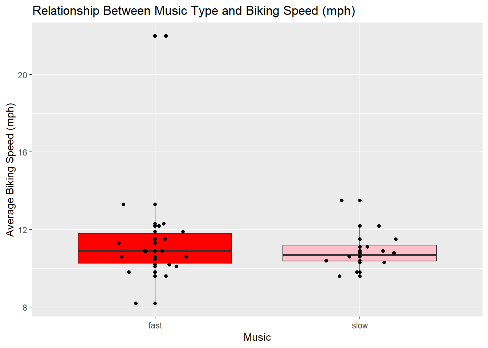
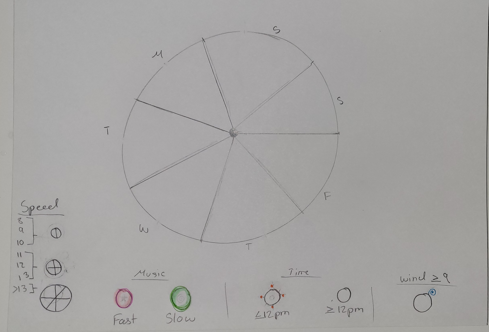

#read in my biking speed data
#use here package to ensure reproducibility of the code
#bike_data <- read_csv(here("data", "Biking_Speed_Data.csv"))
bike_data <- read.csv("C:/Users/arant/Desktop/ENV S 193DS-R/ENVS-193DS_homework-03/data/Biking_Speed_Data.csv")Homework 3 work
link to Github: https://github.com/arara4191/ENVS-193DS_homework-03.git
#loading in necessary packages
library("tidyverse")
library("here")
library("janitor")
library("gt")
#Problem 1. Personal Data
##a.
I can group my biking trips into trips where I listened to fast or slow music and find the average biking speed (mph) of each group. Since fast music usually gives me more energy, I think this might translate to biking faster when the music is faster.
##b.
library("janitor")
Attaching package: 'janitor'The following objects are masked from 'package:stats':
chisq.test, fisher.testlibrary("tidyverse")── Attaching core tidyverse packages ──────────────────────── tidyverse 2.0.0 ──
✔ dplyr 1.1.4 ✔ readr 2.1.5
✔ forcats 1.0.0 ✔ stringr 1.5.1
✔ ggplot2 3.5.1 ✔ tibble 3.2.1
✔ lubridate 1.9.4 ✔ tidyr 1.3.1
✔ purrr 1.0.4 ── Conflicts ────────────────────────────────────────── tidyverse_conflicts() ──
✖ dplyr::filter() masks stats::filter()
✖ dplyr::lag() masks stats::lag()
ℹ Use the conflicted package (<http://conflicted.r-lib.org/>) to force all conflicts to become errors#cleaning bike data column names
bike_data_clean <- clean_names(bike_data)
#creating a separate data frame to store data exploration info
bike_data_mean_exp <- bike_data_clean %>%
group_by(music) %>% #creating groups based on slow/fast music
summarize(mean_mph = mean(average_biking_speed_mph)) #summarizing mean speed of each group
#creating boxplot to visualize average biking speed based on music
ggplot(data = bike_data_clean,#creating base plot with cleaned data
aes(x = music,
y = average_biking_speed_mph,
fill = music)) +
geom_boxplot() + #creates a box plot
geom_jitter(height = 0,#prevents jitter from moving points along vertically
width = 0.2) + #narrows spread of jitter along x-axis
labs( x = "Music",
y = "Average Biking Speed (mph)",
title = "Relationship Between Music Type and Biking Speed (mph)") +
geom_point() +
scale_fill_manual(values = c("fast" = "red",
"slow" = "pink"))+ # manually changing colors
theme(legend.position = "none") # removes legend
##c.
# using count function to see the number of values for each type of music
count(bike_data_clean,music)# (data frame, column) music n
1 fast 18
2 slow 12Figure 1.Faster recorded biking speeds associated with fast music Data of biking rides collected from the Strava app using miles per hour. Points represent average biking speed of each bike ride with fast(n = 18) or slow music(n = 12). Colors represent music types in the boxplots(fast = red, slow = pink). Fast music has higher recorded average biking speeds with a higher mean, but its distribution still overlaps with the slow biking speed distribution.
##d.
#creating the data frame for the gt table
bike_data_summary <- bike_data_clean %>%
group_by(music) %>% #creating groups based on slow/fast music
summarize(observations = n(), #counting the number of observations per group
average_speed = round(mean(average_biking_speed_mph), digits = 1),#summarizing mean speed of each group
max_avg_speed = max(average_biking_speed_mph),# fidning max speed
min_avg_speed = min(average_biking_speed_mph)) #finding min speed
#creating gt table
gt_bike_data_summary <- gt(bike_data_summary) %>% #creating dataframe to use for gt table display
cols_label( # renaming column names in table to remove underscores
music = "Music",
observations = "Observations",
average_speed = "Average Speed (mph)",
max_avg_speed = "Maximum Average Speed(mph)",
min_avg_speed = "Minimum Average Speed(mph)"
) %>%
tab_header(title = "Bike Speed Summary Statistics")
# adding title
gt_bike_data_summary # displaying table
#Problem 2. Affective Visulization
##a.
For my affective visualization I was inspired by the postcards sent between Stefanie and Giorgia and how they brought their own everyday art and doodles into play. For my project I thought it would be fun to use watercolors(do not currently have them at home) to resemble a wheel of a bike by splitting a circle into seven different shapes for everyday of the week and splitting the data into the respective day they were collected in. This would allow me to see the days I recorder/biked the most. Within the slices, pink circles depict fast music bikes while green depict slow music days, orange dots around the circle represent biking at noon or before, and a blue spiral outside the circle means it was windy that day. The smaller and less lines inside a circle represent slower biking speeds while bigger circles with more lines represent faster speeds.
##b.
#

##c.
add draft
##d.
the content of your piece (what are you showing?) the influences (what did techniques/artists/etc. did you find influential in creating your work?) the form of your work (written code, watercolor, oil painting, etc.) your process (how did you create your work?)
In this watercolor visualization I’m using a sliced circle shape to resemble the wheel of a bike and using the seven slices to represent a day of the week in which smaller wheels with different colors, sizes and designs are organized to represent data from that bike ride. I drew inspiration from the hand drawn work of the dear data project that embraced incorporating doodles into their data visualizations.